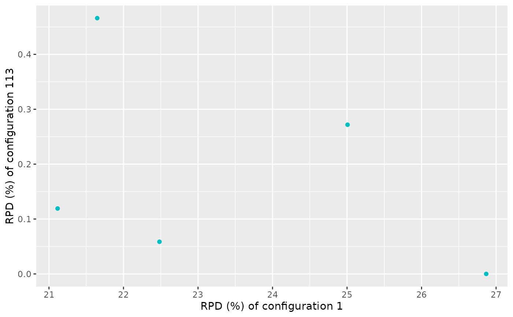
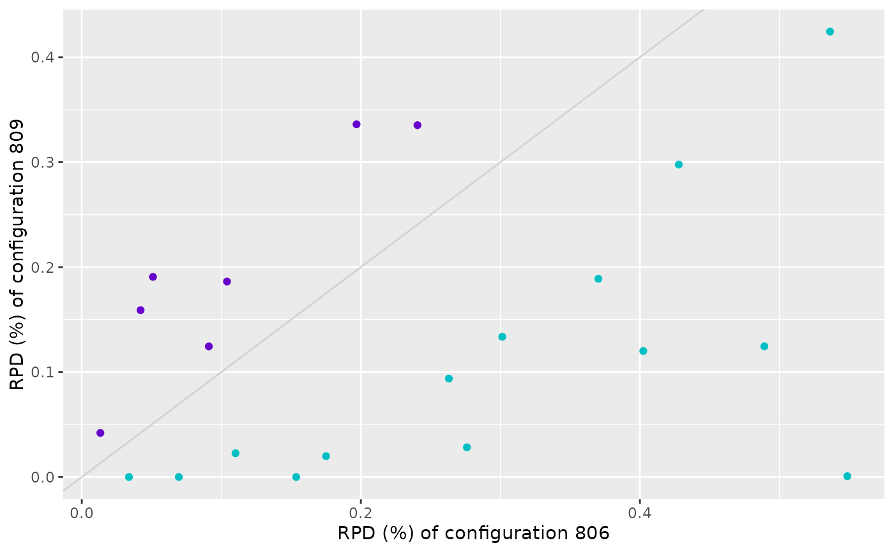
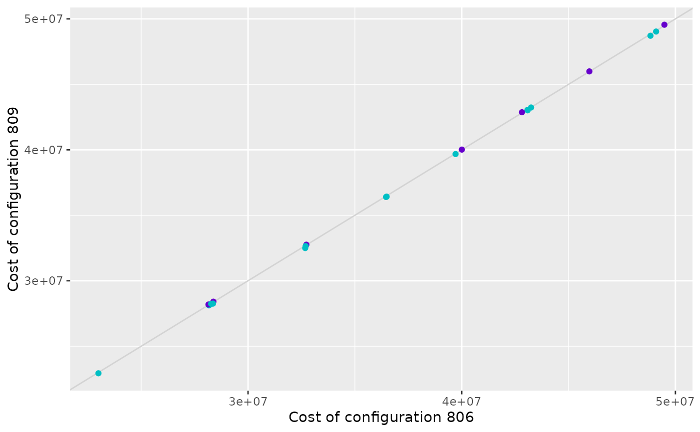

Performance Scatter Plot of Two Configurations
Source:R/scatter_performance.R
scatter_performance.RdCreate a scatter plot that displays the performance of two configurations on a provided experiment matrix. Each point in the plot represents an instance and the color of the points indicates if one configuration is better than the other.
scatter_performance(
experiments,
x_id,
y_id,
rpd = TRUE,
filename = NULL,
interactive = base::interactive(),
instance_names = NULL
)
scatter_training(irace_results, ...)
scatter_test(irace_results, ...)Arguments
- experiments
Experiment matrix obtained from irace training or testing data. Configurations in columns and instances in rows. As in irace, column names (configurations ids) should be characters. Row names will be used as instance names.
- x_id, y_id
Configuration IDs for x-axis and y-axis, respectively.
- rpd
(
logical(1)) TRUE to plot performance as the relative percentage deviation to best results per instance, FALSE to plot raw performance.- filename
(
character(1)) File name to save the plot, for example"~/path/example/filename.png".- interactive
(
logical(1)) TRUE if the report may use interactive features (usingplotly::ggplotly(),plotly::plot_ly()andDT::renderDataTable()) or FALSE if such features must be disabled. Defaults to the value returned byinteractive(),- instance_names
Either a character vector of instance names in the same order as
rownames(experiments)or a function that takesrownames(experiments)as input.- irace_results
The data generated when loading the
.Rdatafile created byirace(or the filename of that file).- ...
Other arguments passed to
scatter_performance().
Value
ggplot2::ggplot() object
Details
The performance matrix is assumed to be provided in the format of the irace experiment matrix thus, NA values are allowed. Consequently the number of evaluations can differ between configurations due to the elimination process applied by irace. This plot only shows performance data only for instances in which both configurations are executed.
scatter_training() compares the performance of two configurations on the
training instances. The performance data is obtained from the evaluations
performed by irace during the execution process.
scatter_test() compares the performance of two configurations on the test
instances. The performance data is obtained from the test evaluations
performed by irace. Note that testing is not enabled by default in irace
and should be enabled in the scenario setup. Moreover, configuration ids
provided in x_id and y_id should belong to elite configuration set
evaluated in the test (see the irace package user guide for more details).
Examples
iraceResults <- read_logfile(system.file(package="irace", "exdata",
"irace-acotsp.Rdata", mustWork = TRUE))
best_id <- iraceResults$iterationElites[length(iraceResults$iterationElites)]
scatter_performance(iraceResults$experiments, x_id = 1, y_id = best_id)

iraceResults <- read_logfile(system.file(package="iraceplot", "exdata",
"guide-example.Rdata", mustWork = TRUE))
scatter_training(iraceResults, x_id = 806, y_id = 809)

# \donttest{
scatter_training(iraceResults, x_id = 806, y_id = 809, rpd = FALSE)

# }
iraceResults <- read_logfile(system.file(package="iraceplot", "exdata",
"guide-example.Rdata", mustWork = TRUE))
scatter_test(iraceResults, x_id = 92, y_id = 119)
# \donttest{
scatter_test(iraceResults, x_id = 92, y_id = 119, rpd=FALSE)
 # }
# }